L’ERTMS dans RailLab
Projets ERTMS sous RailLab
Rail Concept maitrise les spécificités de la signalisation ERTMS. Nous avons accompagné SNCF Réseau pour définir la stratégie de déploiement de la signalisation ERTMS niveau 2 sur le réseau conventionnel et a réalisé de nombreuses études d’exploitation sur des projets ERTMS. Fort de cette expérience, Rail Concept a développé cette signalisation dans RailLab pour la modélisation des grilles horaires et les simulations. Tous les niveaux sont intégrés : niveau 1 - 2 - 3 avec les cantons virtuels et la détection de l’intégrité des trains.
Les fonctionnalités ERTMS dans RailLab ont été développées selon les spécificités de l’ERA (European Union Agency for Railways) et elles sont en tout point identiques. Les paramétrages des calculs sont donc conformes aux standards européens.
Modélisation
La modélisation de la signalisation ERTMS s’effectue à travers différents domaines :
Infrastructure
En ETCS niveau 1 et 2, la signalisation est représentée sous forme de repères et de circuits de voie (joint de zone).
En ETCS 3, la signalisation inclut en plus l’option de détection de l’intégrité des trains permettant d’utiliser les cantons virtuels à l’intérieur des cantons physiques.
Matériel roulant
Les caractéristiques des matériels roulants intègrent les paramètres ERTMS permettant de réaliser le calcul de marche et le calcul des courbes de freinage utilisées dans le calcul des conflits (freinage de service ou freinage d’urgence). Ces paramètres sont à définir en fonction du type de train (Gamma ou Lambda).

Atoûts
La signalisation ERTMS est intégrée de manière très précise dans RailLab. Cette finesse dans la modélisation permet :
Simulation
Calcul des conflits
RailLab permet de calculer les conflits de signalisation entre trains en ERTMS sur tous les niveaux. Cette fonctionnalité permet de construire des grilles horaires robustes sans conflits. Le calcul de conflit se base sur la modélisation précise de l’infrastructure et sur les paramètres détaillés des courbes de freinage des matériels roulants et des paramètres de calcul généraux ERTMS.
Simulation dynamique
Paramètres de calcul
Différents paramètres entrent en jeu pour calibrer le calcul de marche et le calcul des distances de freinage. Ces paramètres permettent de définir les temps et les distances supplémentaires utilisés dans le calcul de conflits.
RailLab permet de simuler un plan de transport de manière dynamique en tenant compte des distances de freinage en ERTMS vis-à-vis des repères. Cette fonctionnalité, utilisée dans les tests de robustesse et les tests stochastiques, permet de reproduire seconde après seconde un scénario d’exploitation en situation perturbée en injectant des retards et en appliquant des actions opérationnelles pour réduire les perturbations.
Animation
RailLab permet de représenter l’infrastructure et les circulations modélisées dans un plan de transport seconde après seconde y compris avec la signalisation ERTMS. Il est ainsi possible d’animer une grille horaire pour visualiser la circulations des trains de manière réaliste, les cantons occupés et les distances de freinage en temps réel.
{kind=link}
{kind=link}